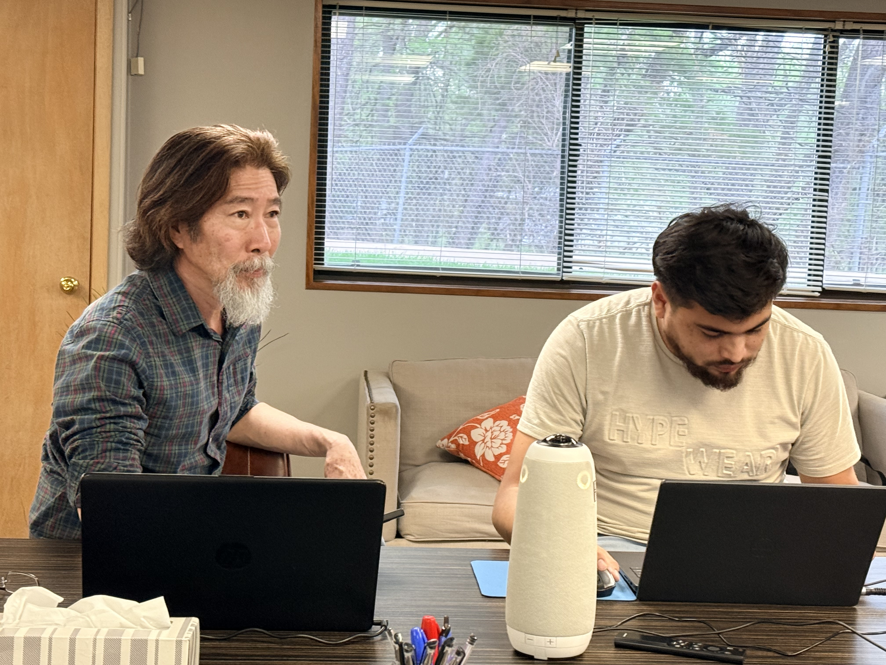

0
cúpula de AI missional no Silicon Valley onde apresentamos o Tripod
Querida Zion Church, nestes dois meses Deus abriu portas muito estratégicas para o nosso trabalho. Seguimos avançando com Terena e Kosrae aqui em Kansas City e também pudemos compartilhar, no Silicon Valley, a visão de tradução da Bíblia com ajuda de AI usando o Tripod.
Este reel aparece aqui logo no início porque ele traduz muito bem o coração desta etapa do ministério.
Neste vídeo, o Suzuki está ensinando sobre a chegada do Evangelho nos povos indígenas. Esse tipo de ensino faz parte da forma como buscamos conectar missão, história bíblica e formação de equipes aqui em Kansas City.
Se o vídeo não carregar dentro da página no seu navegador, ele pode ser aberto diretamente no Instagram pelo botão abaixo.
Quatro pontos resumem bem o que Deus nos permitiu viver nesses dois meses.
Em março, seguimos trabalhando aqui em Kansas City com as equipes de tradução das línguas Terena e Kosrae. O processo de coleta de dados, testes e refinamento do fluxo oral continua avançando de forma encorajadora.
Temos visto progresso real em contextos concretos de tradução, o que nos anima porque mostra que esse trabalho não está ficando apenas no nível da pesquisa, mas já está servindo equipes reais.
Seguimos desenvolvendo um caminho prático para servir uma língua indígena brasileira de forma mais rápida e respeitosa.
O trabalho com Kosrae continua nos ajudando a validar o método em um contexto insular do Pacífico.
Os testes acontecem em diálogo com tradutores e não só em ambiente técnico ou de laboratório.
Em abril, viajei ao Silicon Valley para participar e palestrar no MAI - Cúpula de AI Missional. Lá apresentei nosso modelo de tradução da Bíblia com ajuda de AI usando o Tripod.
Foi uma oportunidade muito estratégica para mostrar que a AI pode servir a missão de forma responsável, prática e profundamente contextual, especialmente em línguas que nunca tiveram tradição escrita.
Compartilhamos o Tripod como um modelo concreto para tradução bíblica assistida por AI.
O encontro abriu conversas valiosas com pessoas que também querem servir a missão com tecnologia.
A ênfase foi mostrar que o avanço técnico precisa nascer do serviço às equipes e não apenas da novidade.
O ponto principal dessa apresentação foi o método que desenvolvi para trabalhar com línguas totalmente sem escrita. Nesse fluxo, o AI analisa a língua e desenvolve seu próprio alfabeto interno.
Esse alfabeto interno permite alimentar o modelo com dados da língua mesmo sem uma ortografia estabelecida. Depois disso, o modelo ajuda a equipe de tradução gerando rascunhos em áudio para serem testados, corrigidos e refinados pela própria equipe, de forma totalmente oral.
O método não depende de uma ortografia prévia para começar a trabalhar com a língua.
O modelo devolve sugestões em áudio, no formato mais natural para a equipe ouvir, testar e ajustar.
Esse fluxo pode reduzir em até 5 vezes o esforço necessário dos tradutores em várias etapas do processo.
Outra alegria desses meses é ver que Deus tem enviado mais obreiros para ajudar. Temos recebido apoio não só ministerial, mas também técnico, inclusive em áreas de engenharia de AI.
Isso fortalece muito a capacidade da equipe aqui em Kansas City para desenvolver melhor as ferramentas, acompanhar tradutores com mais constância e responder às oportunidades que Deus está abrindo.
Novos colaboradores estão ampliando nossa capacidade de servir com constância e profundidade.
Temos visto ajuda concreta em áreas técnicas que antes eram gargalo para o desenvolvimento.
Isso nos prepara para apoiar mais equipes e validar o método em novos contextos e novas línguas.
Essas fotos mostram melhor o que vivemos neste período: ensino, trabalho direto com tradução, viagem ministerial e cuidado com a família.

Que vocês vejam como Deus está abrindo um caminho muito concreto para servir línguas sem escrita com tradução oral assistida por AI, sem perder o caráter relacional, pastoral e missionário do trabalho.
Obrigada por seguirem conosco com generosidade e oração. O apoio de vocês sustenta pesquisa, desenvolvimento, acompanhamento de tradutores e também a nossa família, enquanto damos novos passos nessa frente tão estratégica.